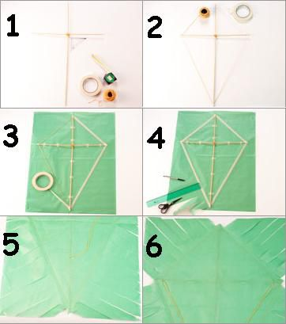

Pasos para construir una Cometa
Materiales
- Varilla de 0,5 x 60
- Varilla e 0,5 x 40
- Cinta de papel
- Hilo de algodon
- Papel barrilete
Pasos
- Arma una cruz con las varillas y únelas fuertemente con hilo. Ten en cuenta que la mitad de la varilla más corta se tiene que colocar formando un ángulo de 90° con la más larga y a 1/3 del extremo (superior) de la misma
- Con cinta de papel, adhiere un hilo al extremo de una de las varillas, y pásalo por los otros 3 extremos de la cruz, asegurándolo con cinta.
- Coloca la cruz sobre papel barrilete y únela a este último con cinta de papel, por medio de 4 ó 5 puntos en cada varilla. Con cinta, también adhiere el hilo.
- Con tijera, realiza flecos en el papel que quedó por fuera del rombo. Ten cuidado de no cortar los hilos de la estructura.
- Por el revés del barrilete, ata la punta de un hilo de al menos 7 m de largo a 1/3 del extremo (inferior) de la varilla más larga y saca el hilo por el derecho del barrilete, en el mismo lugar
- Ata otro hilo en uno de los extremos de la varilla más corta, pásalo hacia el frente del barrilete en el mismo lugar atravesando elpapel , y vuelve a pasarlo hacia el revés por el otro extremo, dejando unos 70 cm en el frente del barrilete. Ata el hilo en la estructura. Por último, une el hilo colocado en el paso 6 con el que ataste en el paso
